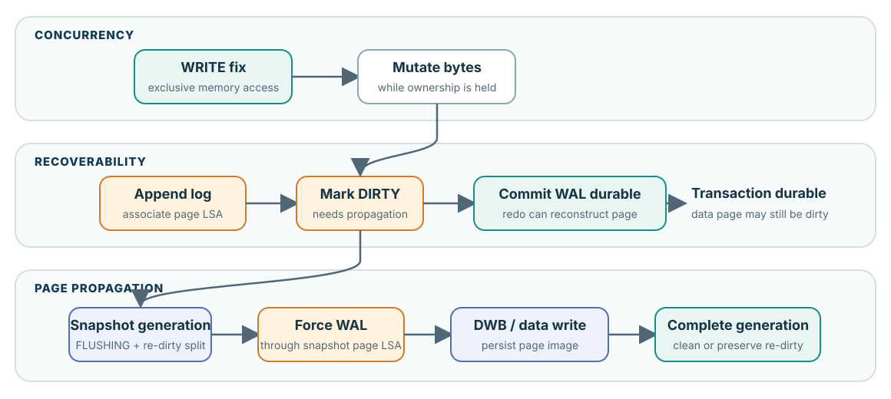

Three clocks

WRITE fix, durable WAL, data-page flush를 한 단어 “durability”로 뭉개지 않기 위한 발표용 contract card.

WRITE fix는 memory access 권한이다. 필요한 WAL과 commit record가 durable하면 data page가 아직 old여도 redo로 복구할 수 있다. Page flush는 나중에 WAL-before-data를 지키며 image를 전파한다.
“WRITE latch를 얻었으니 durable하다”와 “commit 전에 dirty page를 반드시 flush한다”는 둘 다 틀리다. 전자는 WAL을 생략하고, 후자는 WAL이 제공하는 deferred writeback을 없앤다.
| Crash point | Durable material | Correct interpretation |
|---|---|---|
| Before commit WAL durable | Old data; incomplete/uncommitted log possible | Committed durability를 주장할 수 없다. Recovery가 invalid log를 무시하거나 undo한다. |
| After commit WAL durable, before data write | Redo sufficient; data page may be old | 허용되는 정상 상태. Page LSA gate로 필요한 redo를 적용한다. |
| DWB copy durable, home page torn | Log + protected page copy | DWB recovery가 home image를 복원한 뒤 log redo가 진행된다. |
| Snapshot write complete, resident re-dirty | Old snapshot on storage; newer memory generation | Flush success와 BCB DIRTY가 동시에 참일 수 있다. New DIRTY를 보존한다. |
| Mechanism | Pinned source |
|---|---|
| Representative caller log → dirty ordering | heap_file.c:2867–2868; btree.c:4071–4073 |
| Page LSA and oldest-unflush-LSA | page_buffer.c:4983–5081 |
| Snapshot, WAL gate, DWB/data write, rollback | page_buffer.c:10723–10961 |
| Force log through requested LSA | log_page_buffer.c:4150–4189 |
| Crash matrix and evidence limits | Verified book chapter 11 |